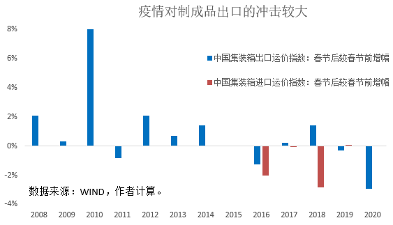
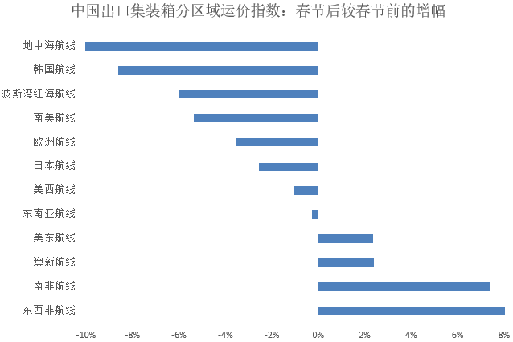

Switch即将面临全球断货，分散供应链迫在眉睫
原文链接 备份链接 图片来源：unsplash 记者：伍洋宇 “ 在情况未得到缓解之前，Switch及其游戏价格很可能会有不同程度的走高趋势。 ” 尽管《健身环大冒险》价格走高引起了一些消费者的不满，但它可能很快连买也买不到了。 据彭博社 …

疫情对全球供应链的影响触及哪一阶段，及其冲击程度，将取决于疫情本身的演变及持续时间。如果疫情对全球供应链冲击推演到第四阶段，那么疫情将升级为严重冲击全球经济的灰犀牛
文 | 徐奇渊
世界银行的世界发展指数（WDI）显示，2003年，中国工业增加值在全球占比仅为6.8%，2017年上升至23.9%。截至到2018年，中国已成为120多个国家的最大贸易伙伴。如今，中国在全球供应链中的地位显著。
中国对全球经济的影响，实际上远超自身体量。更加重要的是，这一影响力还体现在中国居于全球供应链的核心节点上。过去十多年，中国已经成为全球供应链网络的中心，中间品进出口占到相当高的比重。根据世界银行和联合国贸发会议共同发布的“世界综合贸易解决方案”（WITS）数据库，观察全球近200个经济体从中国进口的商品，中间品在全部进口中的占比平均达到21.7%（中位数）。
疫情对全球供应链的冲击不容忽视
与最终产品不同，其他经济体从中国进口中间品，是为了投入到生产过程。任何中间品贸易的中断，都有可能影响到整个生产过程的连续性，从而造成更大的损失，其影响远超中间品贸易本身的减少。
根据牛津经济研究院(Oxford Economics)预测，疫情冲击将导致今年全球经济增长减少0.2%，年增速跌至2.3%，这将是2008年金融危机以来的最低增速。不过从结果来看，这一预测主要还是考虑中国经济放缓本身对全球带来的影响。如果考虑疫情对全球供应链的冲击，则全球经济将面临更加严峻的考验。事实上，这种挑战已经对中国国内的供应链网络产生了冲击。
经济全球化、供应链的全球化，使得一个地区的疫情冲击也更加具有放大性的全球影响。全球的经济决策者都应该注意到这一点，并且加强密切的政策合作，以共同应对疫情对全球供应链带来的挑战。
推演疫情对全球供应链冲击的四个阶段
第一阶段，疫情对中国国内的供应链网络产生影响。疫情冲击使国内生产秩序受到一定程度的破坏。企业复工时间推迟、外地返工人员面临隔离期、复产工人缺乏口罩等防护条件，物流运力也受到了显著影响。这些对制造业的用工、库存、生产、运输、订单等都产生了冲击，尤其在湖北疫区，影响更甚。
第二阶段，疫情影响到中国向其他国家出口中间产品，导致其他国家生产过程出现中断。但这一阶段，由于我国企业和国外企业的产成品库存、以及运输时间的缓冲，暂时对我国从其他国家的进口不产生影响。
第三阶段，全球供应链中断的效果反馈，通过进口渠道反射影响到我国。由于国外企业的生产过程中断，及其产成品库存消化完毕，因此我国的中间品、最终品进口也将面临暂停风险。
第四阶段，在最严重的情况下，供应链中断将向其他没有中国企业直接参与的全球供应链扩展。中国在全球供应链中的地位至关重要，中短期内其他国家的企业无法完全替代中国的地位，同时由于引致其他外国企业供应链出现断档，因此全球供应链的中断完全可能蔓延到与中国无直接关系的生产网络。这时候全球经济的不确定性将大幅上升。
疫情对全球供应链的影响能够触及哪一个阶段，及其冲击程度，将取决于疫情本身的演变及其持续时间。如果疫情对全球供应链的冲击推演到第四阶段，那么疫情将进一步升级成为严重冲击全球经济的灰犀牛。
从这个角度来看，全球协力应对疫情，对于维系全球供应链的稳定具有十分重要的意义。而中国对疫情的全力防控，以及在防控疫情的前提下统筹进行复工，对于全球供应链稳定也具有很大的积极意义。

当前疫情对全球供应链的冲击正处于第二阶段
目前疫情已经对春节后的出口交货产生了影响。观察中国出口集装箱运价指数（CCFI），对比2020年春节后、春节前的变化可以发现：出口运价指数从964.95下降至936.65，降幅为-2.93%。回顾2008年至2019年的12年间，春节后出口运价指数出现上升的有9年，出现下降的仅有3年，跌幅最大是2016年春节后的-1.26%。可见，2020年春节后出口运价指数的降幅，已经明显超出了正常历史区间。尤其是2020年的出口运价指数变化，已经考虑到了推迟复工因素（延长的休息日期间不再发布运价指数），因此2020年数据和其他年份具有可比性。
另外，从运价指数来看，疫情对进口渠道的影响目前还不明显。同样观察中国进口集装箱运价指数（CICFI）的变化，可以发现：2020年春节前后，该指数变化几乎为0。在仅有的近5年数据中，有2年的变化超过-2%，有3年接近0。这表明，目前进口运价指数尚在正常的历史区间，疫情对于中国进口的冲击不明显。
集装箱的主要运输内容是工业制成品，当前疫情冲击反映到运价指数上，已经对中国的出口制成品产生了影响，但是对进口制成品的影响目前还不明显。可见，疫情对全球供应链的影响已经进入到了第二阶段。
哪些国家的供应链受到了更大冲击？
如前所述，中国出口集装箱运价指数（CCFI）指数总体上出现了显著下降，超出了春节后变化的正常历史区间。在总体指数下降的情况下，各分区航线指数的变化不尽一致。其中，南非航线、东西非航线甚至出现了较大幅度的上升。另外，美东、美西航线各有涨跌，所受影响暂时不大，但后续影响还有待观察。
从2月中旬公布的现有运价指数来看，以下航线的出口运价指数已经受到了较大冲击，具体有：日本航线（2.5%）、欧洲航线（-3.6%）、南美航线（-5.4%）、波斯湾红海航线（-6.0%），韩国航线（-8.5%）、地中海航线（-10.1%）。

数据来源：WIND，作者计算。
其中，向南欧和北非地区提供出口品的地中海航线受到冲击最大。根据彭博社2月14日的报导，南欧塞尔维亚的供应链已经受到冲击。由于来自中国的音响系统和其它电子零件短缺，菲亚特-克莱斯勒汽车在塞尔维亚的一个组装厂将停止运营。这是欧洲首个受新型冠状病毒疫情影响而停产的工厂。
此外，波斯湾红海航线、南美航线也受到了较大冲击，但是由于这些国家的体量较小，所受关注不多。另一方面，韩国、欧洲、日本这些地区的经济体量较大，而且从运价指数来看，来自中国的产品供应也受到较大冲击，这些国家的供应链停顿更加受到广泛关注。
同时，武汉也是中国汽车制造业的重镇，武汉本身以及国内汽车供应链受到的冲击，也开始蔓延到韩国、日本。2月初，由于来自中国的零部件短缺，韩国现代汽车在国内的生产线已经大面积停产。同样的原因，日产汽车在国内的生产线也已经在2月中旬暂停了部分生产线。通用汽车的韩国工厂的生产线，也正在面临停产的考验。汽车行业的其他跨国公司正在密切关注自己的库存和全球供应链的暂时冲击。
中国面临的产业外移压力有多大？
疫情对中国产业的影响分为三个层面。其一，在乐观情形下，如果疫情只是较为短期的冲击，其对产业外移影响较少。尤其对机械、电子等优势产业基本没有影响。重新配置全球供应链非常复杂，在短期内难以实现。如果只是短期冲击，各国企业对全球布局的战略选择将非常谨慎。
其二，如果疫情对生产的影响持续到3月甚至4月，可能对出口订单产生影响。尤其对于季节性较强的行业，其新增订单将明显流失，并影响其2季度、甚至3季度的出口生产。我们注意到，每年3、4月都是PMI出口订单下单的高峰期。其中，又以3月订单指数最高。这两个月的订单表现，将决定后续多个月的出口金额。目前，3月初华东进出口商品交易会已经延期，4月的广交会能否正常举行将视疫情发展而定。依赖于武汉工厂生产的外国企业正在考虑替代的供应商，即使替代方案成本可能更高。美国咨询公司蓝丝（Blue Silk）公开建议企业应该立即改变供应链，建立一个不包括中国的替代策略。
其三，在极端情况下，如果疫情对生产的影响持续到4月甚至6月，则将会对部分产业的供应链产生实质性破坏，并加速产业外移。尤其对于玩具产业、服装等供应链较短、对配套要求不高的产业。在过去两年中美贸易冲突之间，有些企业已经将生产转移到了东南亚一些国家。叠加贸易战余波，如果疫情对生产的影响持续时间较长，则跨国公司将有可能考虑进一步多元化其全球供应链。
总体上看，目前疫情对全球供应链的影响仍处于第二阶段的初期，即：中国向其他经济体提供的零部件中间品下降，其影响已经初步扩展到韩国、日本、南欧，并且有可能进一步向其他欧洲国家，以及美国扩展。按目前的发展来看，疫情可能对3月的一部分出口订单产生影响，并影响到后续出口。同时，产业转移的风险仍然存在，但总体上风险较为可控。由于疫情本身仍有一定的不确定性，而且我国企业复工也遇到了各种各样的现实问题，因此后续影响仍待观察。但有一点已经非常明确：这已经不是一个各扫门前雪的时代了。
（作者为中国社会科学院世界经济与政治研究所研究员，CF40研究部主任；编辑：王延春）

▲点击图片查看更多疫情报道
责编 | 蒋丽 lijiang@caijing.com.cn
本文为《财经》杂志原创文章，未经授权不得转载或建立镜像。如需转载，请在文末留言申请并获取授权。
原文链接 备份链接 图片来源：unsplash 记者：伍洋宇 “ 在情况未得到缓解之前，Switch及其游戏价格很可能会有不同程度的走高趋势。 ” 尽管《健身环大冒险》价格走高引起了一些消费者的不满，但它可能很快连买也买不到了。 据彭博社 …
原文链接 备份链接 资本市场关注的是“变化的变化”，即二阶导数，所以资本市场认为疫情影响的拐点已经出现了 文 |《巴伦》中国撰稿人张晓添 编辑 | 康娟 进入2月中旬，新型冠状病毒引发的疫情正在从爆发期进入平稳期。国内外资本市场从回调到反 …
原文链接 备份链接 2020年全球GDP年增长率受疫情影响将降低0.2%左右几天前，新西兰渔民们把刚刚捕来的共100多吨大龙虾放生大海。当地媒体报道，中国传统春节是新西兰龙虾出口最畅销的时候，但今年受新冠状病毒疫情影响，中国客户纷纷取消 …
原文链接 备份链接 一周多前小南发起了一场征集——“疫情过后你最想做的一件事”,得到了读者朋友们的积极参与。下文是00后武汉大学生薛珂发来的一篇自述。 文 | 薛珂 编辑 | 小豆 出生于2000年，今年虚岁20，我是武汉华中科技大学的一 …
原文链接 备份链接 所有的鱼现在同步在 allthefishnews.wordpress.com 更新并可通过邮件订阅。你可以复制上方链接浏览器打开获取订阅链接。 *点击 阅读原文 可查看昨天的推送 根据丁香医生实时数据，截至 2 …